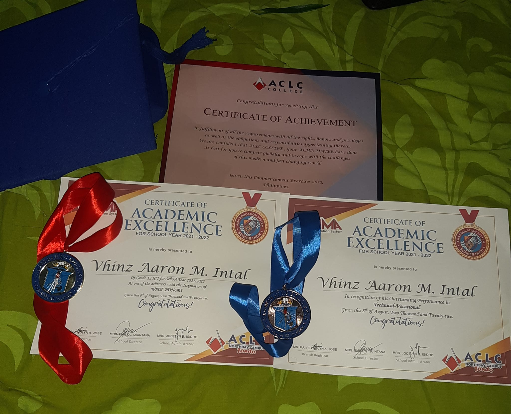
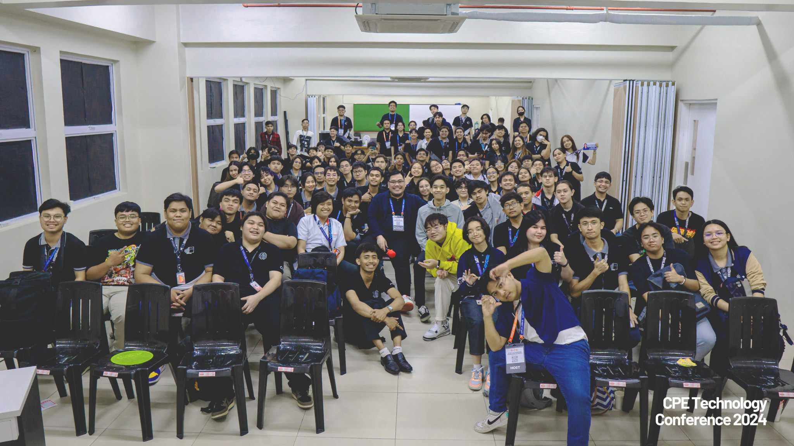
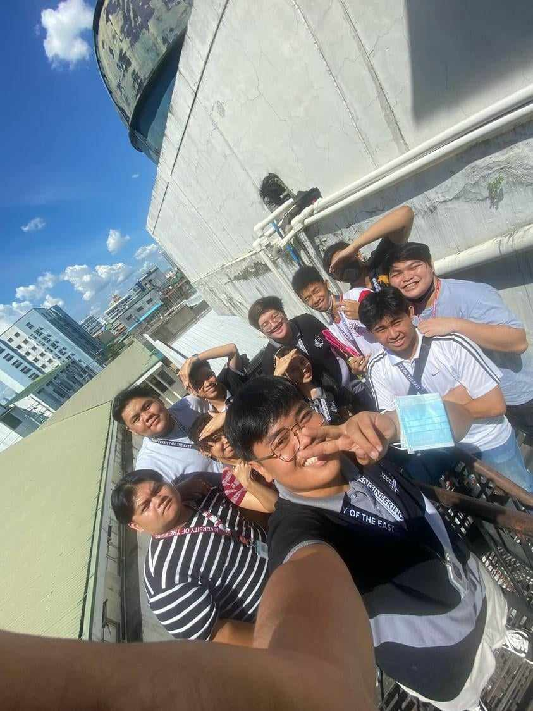

Meet Vhinz Aaron M. Intal, a vibrant 20-year-old currently in his
3rd year of pursuing a Bachelor of Science in Computer Engineering
at the University of the East. Residing in Raxabago St. Tondo, Manila,
Vhinz is deeply immersed in his studies, driven by a passion for
technology and a strong commitment to his academic and professional goals.

Vhinz graduated with honors from ACLC Nortbay
Manila in the 2021-2022 academic year. As the eldest son in
his family, Vhinz is part of a close-knit family with three
siblings, including a youngest sibling who is just 6 months old.
This role has instilled in him a strong sense of responsibility
and dedication, both in his personal life and academic pursuits.


Vhinz enjoys playing video games, playing his guitar,
and spending time with friends where they create unforgettable memories.
In addition, he likes to explore new topics that interest his curiosity
and watch animes. His friends' and the CPE community's support and bonds
have greatly boosted his motivation, making him eager and thrilled for
upcoming events and projects.
here are vhinz's social medias.
if you want to know more about him slide in his dms!!